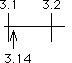
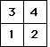
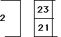
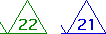

Addresses in fractals
Addresses are the main tool for relating fractals and dynamics.
The order of the elements of an address is important, and to some counterintuitive, so we take some care with developing this idea.

Decimals as addresses
: a familiar example that illustrates addresses.

Addresses of a square
are used for comparing the random and deterministic IFS algorithms, and for detecting patterns in data with driven IFS.

Longer addresses specify smaller regions
This is perfectly sensible: more information specifies a location with greater precision.

For fractals with symmetries, different rules can generate the same shape, but with
different addresses for the same region
.